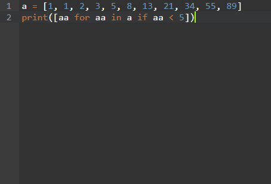
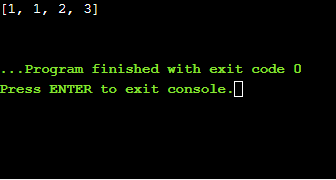

2.奇數或偶數 odd or even <<
Previous 3.列出少於十的數字 List Less Than Ten
列出少於十
如果有條件，則列出數字元素
練習3（和解決方案）
拿一個清單，例如說一個：
a = [1、2、3、5、8、13、21、34、55、89]
並編寫一個程序，打印出列表中小於5的所有元素。 附加功能： 而不是一個一個地打印元素，而是創建一個新列表，其中該列表中的所有元素少於5個，並打印出該新列表。
用一行Python編寫。
向我們問一個數字，然後返回一個列表，該列表僅包含原始列表a中小於用戶給定數字的元素。
List Less Than Ten
list numbers elements if conditional
Exercise 3 (andSolution)
Take a list, say for example this one:
a = [1, 1, 2, 3, 5, 8, 13, 21, 34, 55, 89]
and write a program that prints out all the elements of the list that are less than 5.
Extras:
Instead of printing the elements one by one, make a new list that has all the elements less than 5 from this list in it and print out this new list.
Write this in one line of Python.
Ask the user for a number and return a list that contains only elements from the original list a that are smaller than that number given by the user.
討論區
本週主題：
清單
更多條件（如果語句）
Discussion
This week’s topics:
Lists
More conditionals (if statements)
清單
本週的練習涉及一個對所有類型和風格的編程都至關重要的主題：列表。 列表基本上是一種將事物（稱為元素）進行分組的有序方式-Python中列表的最酷的功能是您可以擁有一個包含多種類型對象的列表。 您的列表可以混合在字符串，整數，對象，其他列表之間，包括您所擁有的。
Lists
This week’s exercise hits on a topic critical for all types and styles of programming: lists. Lists are basically an ordered way of grouping things (called elements) - the cool thing about lists in Python is that you can have a list that contains objects of multiple types. Your list can mix between strings, integers, objects, other lists, what have you.
The way to construct an empty list is just to do
x = []
現在，變量x包含一個空列表。 要將內容添加到此列表中，只需將它們“添加”到列表中即可。 像這樣：
And your variable x now holds an empty list. To add things to this list, just “append” them to the list. Like so:
x = []
x.append(3)
您的列表x現在看起來像[3]。
在Python中，列表也是可迭代的，這意味著您可以方便地使用for循環遍歷它們。 （如果您來自其他語言，例如C ++或Java，則最有可能習慣於使用計數器循環遍歷列表的索引-在Python中，您實際上可以循環遍曆元素。）我將讓代碼說明自己：
Your list x now looks like [3].
In Python, lists are also iterables, which means you can loop through them with a for loop in a convenient way. (If you come from other languages like C++ or Java you are most likely used to using a counter to loop through indices of a list - in Python you can actually loop through the elements.) I will let the code speak for itself:
my_list = [1, 3, "Michele", [5, 6, 7]]
for element in my_list:
print(element)
Will yield the result:
1
3
"Michele"
[5, 6, 7]
列表還有許多其他屬性，但是對於基本練習而言，您只需要此for循環屬性。 未來幾週將處理列表的其他屬性。
有關Python中列表的更多信息，請查看以下資源：
There are many other properties of lists, but for the basic exercise all you should need is this for loop property. Future weeks will address other properties of lists.
For more information about lists in Python, check out these resources:
更多條件
關於條件的好處是它們遵循邏輯運算。 它們也可以用於測試相等性。 讓我們舉一個小例子。 假設我想編寫一段代碼，將數字等級（1-100）轉換為字母等級（A，B，C，D，F）。 代碼如下所示：
More Conditionals
The nice thing about conditionals is that they follow logical operations. They can also be used to test equality. Let’s do a small example. Let’s say I want to make a piece of code that converts from a numerical grade (1-100) to a letter grade (A, B, C, D, F). The code would look like this:
grade = input("Enter your grade: ")
if grade >= 90:
print("A")
elif grade >= 80:
print("B")
elif grade >= 70:
print("C")
elif grade >= 65:
print("D")
else:
print("F")
如果成績是50，會發生什麼？ 所有條件都為假，因此“ F”被打印在屏幕上。 但是，如果成績是95，該怎麼辦？ 然後所有條件都成立，一切都打印出來了，對吧？ 不！ 程序將逐行執行。 滿足第一個條件（等級> = 90），因此程序將在if語句內輸入代碼，並執行print（“ A”）。 一旦執行了條件語句中的代碼，將跳過其餘條件，並且不檢查其他條件。
What happens if grade is 50? All the conditions are false, so "F" gets printed on the screen. But what if grade is 95? Then all the conditions are true and everything gets printed, right? Nope! What happens is the program goes line by line. The first condition (grade >= 90) is satisfied, so the program enters into the code inside the if statement, executing print("A"). Once code inside a conditional has been executed, the rest of the conditions are skipped and none of the other conditionals are checked.
解答:
a = [1, 1, 2, 3, 5, 8, 13, 21, 34, 55, 89]
print([aa for aa in a if aa < 5])


範例:
fruits = ["banana", "orange", "pinapple", "banana"]
print([object for object in fruits if object == "banana"])
This would return "banana" 2 times, since there is a total of two objects called "banana" in the list "fruits".
2.奇數或偶數 odd or even <<
Previous